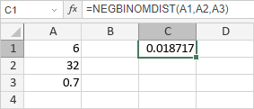

NEGBINOMDIST funkcija
NEGBINOMDIST funkcija je jedna od statističkih funkcija. Koristi se za vraćanje negativne binomne raspodele.
Sintaksa
NEGBINOMDIST(number_f, number_s, probability_s)
NEGBINOMDIST funkcija ima sledeće argumente:
| Argument | Opis |
|---|---|
| number_f | Broj neuspeha, numerička vrednost veća ili jednaka 0. |
| number_s | Broj uspeha koji se traži, numerička vrednost veća ili jednaka 1. |
| probability_s | Verovatnoća uspeha po pokušaju, numerička vrednost veća od 0, ali manja od 1. |
Napomene
Kako primeniti NEGBINOMDIST funkciju.
Primeri
Slika ispod prikazuje rezultat koji vraća NEGBINOMDIST funkcija.
